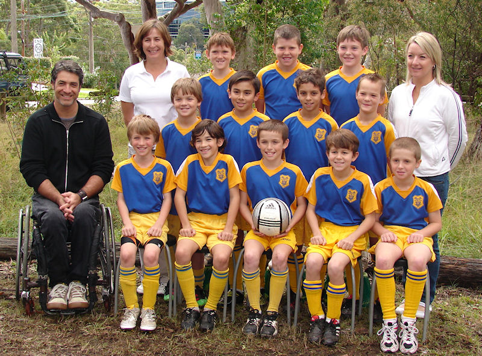
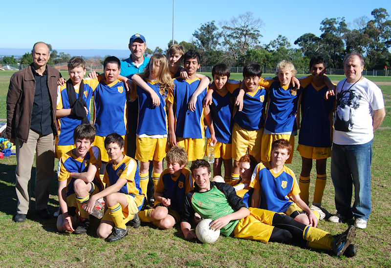

| Match Report - 14 August 2010 |
|
|
|
|
|
|
|
|
|
|
The 2010 U10 Div 1 Team

|
|
|
|
|
|
In round two of the Round Robin, as we finished 2nd in the competition we now
played 4th place which was against Glenhaven. We had a full team present. This
game we needed to at least draw to make the finals.
We played strongly and took control of the game. Most of the first half of the
game was spent in Glenhaven half. Hayden soon scored and the parents heaved a
sign of relief, 1-0. Paul, our coach, was making good use of the reserves and
cycled the boys off strategically and regularly. Hayden scored again and had
another near miss, the first half score was 2-0. Hayden moved into goals which
effectively let Lewis loose to raid the mid fields.
In the second half, Daniel Tidke outpaced the right back and came up to the goal
keeper and kicked the ball past him and in, as he has done so many times this
season! 3-0. Daniel Greco was back to his old self and played well and was even
smiling afterwards!

The North Ryde team were having a good day, well done boys, and were completing
their passes to each other. Mitch was up front but got tripped up and fell hard,
he was down for a while and had landed hard on his arm. We all clapped his efforts
as he walked off with his Dad, Mathew. Then Lewis left-footed one just over the
goals but soon Harry, who has not fully recovered from last week illness, put one
away anyway to take the score to 4-0.
All the boys played well. BTW: that was our 9th victory in a row.

Well deserved player of the match was Hayden Rolls. As Hayden had to leave to
attend a school game, Kevin Bordado received the award for his cheering! I would
also like to thank all the parents who come to support our team, you do make a
difference.
- Joe Rosenfels (Manager)
The 2010 U14 Div 3 Team

|